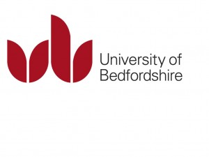

Search the Articles
Search the Case Studies
Search the Membership
Search MirandaNet
MirandaNet Fellowship Article
Membership List | Publications | Research | Specialist Area List | Braided Learning Ejournal
A call for global collective action
Re-engineering the education profession
Christina Preston
Year of posting: 2014
Article
A call for global collective action
Re-engineering the education profession
{kind=link}
In a campaign to increase the impact on education of research findings, Christina Preston, Professor of Educational Innovation and Marilyn Leask, Professor of Knowledge Management, University of Bedfordshire, are back from running workshops in Australia and New Zealand over Easter.
{kind=link}
The professors at the Drake House, Australian Catholic University, Melbourne
Their audiences in Brisbane, Sydney, Melbourne and Wollongong in Australia and Christchurch, Hamilton in New Zealand are groups of academics who are keen to innovate in improving the quality of teaching and the reach, impact and significance of publications on this topic. The remit includes collating the academic publications and action research studies by practitioners.
Underpinning their campaign is the call from the Organisation for Economic Cooperation and Development (OECD) for the creation of ‘knowledge-rich’, evidence-based education systems all over the world. The OECD concern is that “in many countries, education is still far from being a knowledge industry in the sense that its own practices are not yet being transformed by knowledge about the efficacy of those practices” (OECD 2009).
Building global research communities
{kind=link}
Lawrence Ingvarson at ACER, Melbourne
The professors are concerned that this lack of credible and scalable publication of knowledge is permitting politicians to make short term changes to education policy based on whim and prejudice. In this context they are running three workshops about a global online community environment called Education Communities [1]. The first focuses on how academics are using this online communities of practice environments to improve the significance, reach and impact of their research. This online collaboration maximises research reach and impact on users environment which meets the new criteria for the UK assessment of the quality of academic research.
{kind=link}
Melbourne Graduate School
Increasing teaching expertise
The second workshop focuses on ensuring that school teaching is an evidence based profession which also meeting the OECD challenge for effective knowledge management in school-based education. These new ways of working and opportunities for international collaboration are conducted through The Mapping Educational Specialist knowHow project (MESH)[2]. The idea behind this venture is that the existing outcomes from local research that comprise a journal paper, an article for educators and a press release should also be accompanied by entries in a MESH pathway that relates the findings to other observations by academics and practitioners across the world. This process can also contribute to the global reach, impact and significance of local and small scale research as well as improving the perspective of those working in local or regional contexts.
{kind=link}
Nicola Yelland, Victoria University
{kind=link}
Lunch at Victoria University
Building research pathways
In the third workshop practitioners and academics are learning to map their research findings in the same MESH pathways as their global colleagues. For example, one RaDaR group of more than sixty is sharing research into the use of iPads, tablets and mobile devices led by Mandy Pearce at Swansea University. Some members have only researched two or three schools and others are teacher researchers who have done an action research study in their own school. But by working together they can develop a greater and more nuanced understanding of how these devices can improve teaching and learning. Kevin Burden, Hull University is leading the MESH Pathway development. Readers who would like to be involved can find information about how to join up at the end of this article.
{kind=link}
Sandra Wills at Wollongong University hosting lunch.
Moving forward
A number of Australian universities are considering joining up to this movement for global professional ownership of research outcomes: Australian Council for Educational Research and the universities of Ballarat, Deakin, UTS, Victoria, Wollongong, Melbourne, Monash and Sydney: in New Zealand, Waikato and Canterbury University. Many of the academics hosting the workshops are members of the MirandaNet Fellowship,[3] a community of practice established by Christina Preston in 1992 which is free to join. MirandaNet Associate, IRIS Connect, also joined the debate.
Professor Sandy Schuck, at University of Technology, Sydney, a MirandaNet member for many years , commented, “It was great to see the passion that Marilyn and Christina have for supporting teachers in all their endeavours.”

Peter Abusson and Matthew Kearney hosting the professors from England at a famous Sydney restaurant overlooking the bay.
Dr Noeline Wright, another long term member from New Zealand, observed that the visit by Professors Christina Preston and Marilyn Leask to the University of Waikato had raised awareness of the possibilities of international collaboration through the EdComms site and, the development of the MESH programme.
{kind=link}
With Noeline Wright and Bronwen Cowie, Waikato University
In Hamilton, New Zealand, locally sourced restaurant food provided another convivial evening with colleagues.
{kind=link}
The debate over supper was about the political challenges in the England over introducing computer science into the ICT curriculum compared with the smoother progress in New Zealand Schools led by the eminent Professor of Computing, Tim Bell, who is at Canterbury University. Christina and Tim spent sometime sharing practice in England and New Zealand. Tim was on his way to England to speak and, therefore, interested in the issues raging there. They are captured in this series of MirandaNet members’ articles on the turbulent changes in the curriculum to be found here.
{kind=link}
MirandaNet awards
During the Call for Global collective action tour two MirandaNet members have been awarded Senior Fellowships for sharing their knowledge and expertise with members: at Waikato University, The North Island. New Zealand, Dr Noeline Wright’s award was for a co-authored submission to the UK government about the Information and Communications Technology curriculum from the New Zealand perspective. Dr Eva Dakich, Victoria University, Australia, has written articles and participated in online debates on professional development designs. Professor Niki Davis who has been promoted to Pro Vice-Chancellor at Canterbury University, Christchurch, The South Island, New Zealand, has been awarded MirandaNet Ambassador recognition because of her influence on the community since the late 1990s. Christina and Niki have written two papers on models for professional deveopment and Niki has been influential in the areas of action research and community building in particular. Read more.
{kind=link}
Niki Davis with Christina Preston
The MirandaNet members are contributing to the MESH project their experience of remotely authored digital knowledge map construction that they have been developing as one aspect of their professional sharing events called MirandaMods.
{kind=link}
Seminar in Christchurch
These events offer another route for educators to seize the research agenda and have their voices heard either face to face or online.
{kind=link}
A bay in The South Island, NZ
The next workshop and symposium
This opportunity to strengthen the professional voice has struck a chord with many professionals across the world. The next opportunity to get actively involved face to face is at the Teacher Educators in IT (ITTE) run in partnership with MirandaNet and the University of Bedfordshire. This will be held in Bedford, UK (near London) from the 8th – 10th July 2013. You can join in face to face or online. Find out more here. Abstracts of 100-150 words should be in by June 1st if you want to present. Email christina@mirandanet.ac.uk if you want to know more.
Thanks
Warmest thanks to the MirandaNet members who made our visit such a pleasure: Peter Abusson, Eva Dakich, Niki Davis, Elizabeth Hartnell Young, Matthew Kearney, Damien Maher, Sandy Schuck, Nicola Welland and Noeline Wright. We hope that many of the other colleagues we met will keep in touch by joining MirandaNet and contribute to specialist groups as well as MESH pathways in Educational Communities[4].
Thanks also to the MirandaNet associates who supported our tour.
{kind=link}
Footnotes
[1] To Join Education Communities click here. If you want to know more email Christina Preston christina@mirandanet.ac.uk or Marilyn Leask marilyn.leask@beds.ac.uk
[2] Call for Authors for MESH pathways: If you would like to get involved click here. On the MESH screen click ‘Getting involved’ and ‘MESH Guides’ to see who is already involved.
If you would like to contribute as an author of a MESH Guide, please email enquiries@MESHguides.org with MESH in the subject line. Include in the body of the text, the proposed title and a paragraph about the evidence which will underpin the guide and the findings which are relevant to educators. We encourage applications from those who have completed PhD/EdD/Masters theses and other major research projects or systematic reviews.
If you would like to join a RaDaR group to work on a guide, to undertake reviews of the evidence or to be involved in research projects, look for RaDaR groups relevant to you in the Education Communities platform by putting in RaDaR into the search box on the front page. You can then login and request to join that community. If you would like to set a group up, please email enquiries@MESHguides.org with RaDaR in the subject line.”
[3] To join MirandaNet for free click here.
[4] The full programme of the visit is here.
MirandaNet Members can go to the Log on/off area to edit their own articles.
[Back]